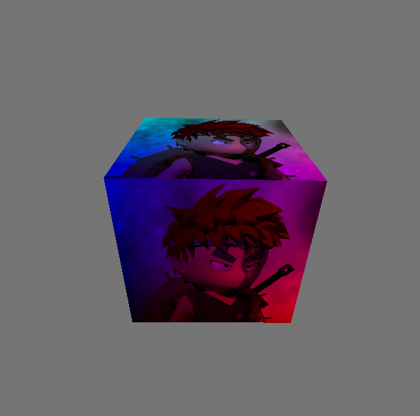
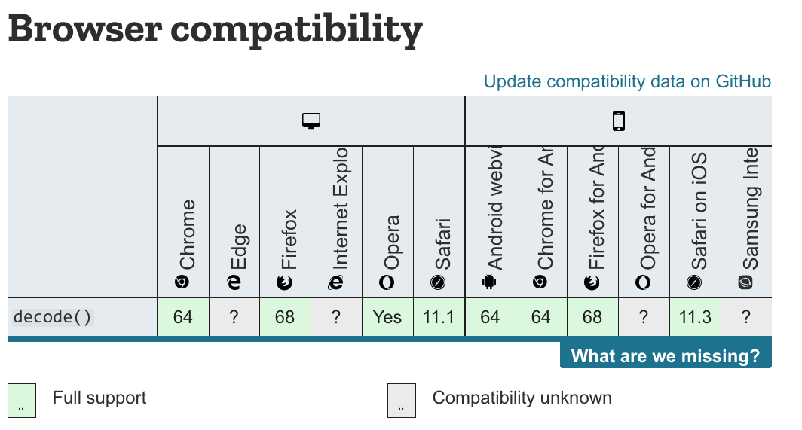

大家好，本文学习Chrome->webgpu-samplers->texturedCube示例。
上一篇博文：
WebGPU学习（七）：学习“twoCubes”和“instancedCube”示例
下一篇博文：
WebGPU学习（九）：学习“fractalCube”示例
最终渲染结果：

该示例绘制了有一个纹理的立方体。
与“rotatingCube”示例相比，该示例增加了下面的步骤：
下面，我们打开texturedCube.ts文件，依次分析增加的步骤：
代码如下：
const vertexShaderGLSL = `#version 450
...
layout(location = 0) in vec4 position;
layout(location = 1) in vec2 uv;
layout(location = 0) out vec2 fragUV;
layout(location = 1) out vec4 fragPosition;
void main() {
fragPosition = 0.5 * (position + vec4(1.0));
...
fragUV = uv;
}
`;
const fragmentShaderGLSL = `#version 450
layout(set = 0, binding = 1) uniform sampler mySampler;
layout(set = 0, binding = 2) uniform texture2D myTexture;
layout(location = 0) in vec2 fragUV;
layout(location = 1) in vec4 fragPosition;
layout(location = 0) out vec4 outColor;
void main() {
outColor = texture(sampler2D(myTexture, mySampler), fragUV) * fragPosition;
}
`;vertex shader传入了uv attribute数据，并将其传递给fragUV，从而传到fragment shader，作为纹理采样坐标
另外，这里可以顺便说明下：fragPosition用来实现与position相关的颜色渐变效果
cubeVertexArray的代码如下：
cube.ts:
export const cubeUVOffset = 4 * 8;
export const cubeVertexArray = new Float32Array([
// float4 position, float4 color, float2 uv,
1, -1, 1, 1, 1, 0, 1, 1, 1, 1,
-1, -1, 1, 1, 0, 0, 1, 1, 0, 1,
-1, -1, -1, 1, 0, 0, 0, 1, 0, 0,
1, -1, -1, 1, 1, 0, 0, 1, 1, 0,
1, -1, 1, 1, 1, 0, 1, 1, 1, 1,
-1, -1, -1, 1, 0, 0, 0, 1, 0, 0,
...
]);创建和设置verticesBuffer的相关代码如下：
texturedCube.ts:
const verticesBuffer = device.createBuffer({
size: cubeVertexArray.byteLength,
usage: GPUBufferUsage.VERTEX | GPUBufferUsage.COPY_DST
});
verticesBuffer.setSubData(0, cubeVertexArray);
...
return function frame() {
...
passEncoder.setVertexBuffer(0, verticesBuffer);
...
} 代码如下：
const pipeline = device.createRenderPipeline({
...
vertexState: {
vertexBuffers: [{
...
attributes: [
...
{
// uv
shaderLocation: 1,
offset: cubeUVOffset,
format: "float2"
}]
}],
},
...
}); WebGPU相对于WebGL1，提出了sampler，可以对它设置filter、wrap等参数，从而实现了texture和sampler自由组合，同一个texture能够以不同filter、wrap来采样
代码如下：
const fragmentShaderGLSL = `#version 450
layout(set = 0, binding = 1) uniform sampler mySampler;
layout(set = 0, binding = 2) uniform texture2D myTexture;
layout(location = 0) in vec2 fragUV;
layout(location = 1) in vec4 fragPosition;
layout(location = 0) out vec4 outColor;
void main() {
outColor = texture(sampler2D(myTexture, mySampler), fragUV) * fragPosition;
}
`;代码如下：
const bindGroupLayout = device.createBindGroupLayout({
bindings: [
...
{
// Sampler
binding: 1,
visibility: GPUShaderStage.FRAGMENT,
type: "sampler"
}, {
// Texture view
binding: 2,
visibility: GPUShaderStage.FRAGMENT,
type: "sampled-texture"
}]
});代码如下，后面会进一步研究：
const cubeTexture = await createTextureFromImage(device, 'assets/img/Di-3d.png', GPUTextureUsage.SAMPLED);代码如下：
const sampler = device.createSampler({
magFilter: "linear",
minFilter: "linear",
});
我们看一下相关定义：
GPUSampler createSampler(optional GPUSamplerDescriptor descriptor = {});
...
dictionary GPUSamplerDescriptor : GPUObjectDescriptorBase {
GPUAddressMode addressModeU = "clamp-to-edge";
GPUAddressMode addressModeV = "clamp-to-edge";
GPUAddressMode addressModeW = "clamp-to-edge";
GPUFilterMode magFilter = "nearest";
GPUFilterMode minFilter = "nearest";
GPUFilterMode mipmapFilter = "nearest";
float lodMinClamp = 0;
float lodMaxClamp = 0xffffffff;
GPUCompareFunction compare = "never";
};GPUSamplerDescriptor的addressMode指定了texture在u、v、w方向的wrap mode（u、v方向的wrap相当于WebGL1的wrapS、wrapT）（w方向是给3d texture用的）
mipmapFilter与mipmap有关，lodXXX与texture lod有关，compare与软阴影的Percentage Closer Filtering技术有关，我们不讨论它们
const uniformBindGroup = device.createBindGroup({
layout: bindGroupLayout,
bindings: [
...
{
binding: 1,
resource: sampler,
}, {
binding: 2,
resource: cubeTexture.createView(),
}],
});相关代码如下：
const cubeTexture = await createTextureFromImage(device, 'assets/img/Di-3d.png', GPUTextureUsage.SAMPLED);该步骤可以分解为两步：
1.解码图片
2.拷贝解码后的类型为HTMLImageElement的图片到GPU的texture中
下面依次分析：
打开helper.ts文件，查看createTextureFromImage对应代码：
const img = document.createElement('img');
img.src = src;
await img.decode();这里使用decode api来解码图片，也可以使用img.onload来实现：
const img = document.createElement('img');
img.src = src;
img.onload = (img) => {
...
};根据Pre-Loading and Pre-Decoding Images with Javascript for Better Performance的说法，图片的加载过程有两个步骤：
1.从服务器加载图片
2.解码图片
第1步都是在其它线程上并行执行；
如果用onload，则浏览器会在主线程上同步执行第2步，会阻塞主线程；
如果用decode api，则浏览器会在其它线程上并行执行第2步，不会阻塞主线程。
chrome和firefox浏览器都支持decode api，因此加载图片应该优先使用该API：

Pre-Loading and Pre-Decoding Images with Javascript for Better Performance
Chrome 图片解码与 Image.decode API
WebGL1直接使用texImage2D将图片上传到GPU texture中，而WebGPU能让我们更加灵活地控制上传过程。
WebGPU有两种方法上传：
该方法要用到copyImageBitmapToTexture函数。虽然WebGPU规范已经定义了该函数，但目前Chrome Canary不支持它，所以暂时不能用该方法上传。
参考资料
Proposal for copyImageBitmapToTexture
ImageBitmapToTexture design
我们来看下createTextureFromImage对应代码：
const imageCanvas = document.createElement('canvas');
imageCanvas.width = img.width;
imageCanvas.height = img.height;
const imageCanvasContext = imageCanvas.getContext('2d');
//flipY
imageCanvasContext.translate(0, img.height);
imageCanvasContext.scale(1, -1);
imageCanvasContext.drawImage(img, 0, 0, img.width, img.height);
const imageData = imageCanvasContext.getImageData(0, 0, img.width, img.height);这里创建canvas->绘制图片->获得图片数据。
（注：在绘制图片时将图片在Y方向反转了）
接着看代码：
let data = null;
const rowPitch = Math.ceil(img.width * 4 / 256) * 256;
if (rowPitch == img.width * 4) {
data = imageData.data;
} else {
data = new Uint8Array(rowPitch * img.height);
for (let y = 0; y < img.height; ++y) {
for (let x = 0; x < img.width; ++x) {
let i = x * 4 + y * rowPitch;
data[i] = imageData.data[i];
data[i + 1] = imageData.data[i + 1];
data[i + 2] = imageData.data[i + 2];
data[i + 3] = imageData.data[i + 3];
}
}
}
const texture = device.createTexture({
size: {
width: img.width,
height: img.height,
depth: 1,
},
format: "rgba8unorm",
usage: GPUTextureUsage.COPY_DST | usage,
});
const textureDataBuffer = device.createBuffer({
size: data.byteLength,
usage: GPUBufferUsage.COPY_DST | GPUBufferUsage.COPY_SRC,
});
textureDataBuffer.setSubData(0, data);rowPitch需要为256的倍数（也就是说，图片的宽度需要为64px的倍数），这是因为Dx12对此做了限制（参考Copies investigation）：
RowPitch must be aligned to D3D12_TEXTURE_DATA_PITCH_ALIGNMENT.
Offset must be aligned to D3D12_TEXTURE_DATA_PLACEMENT_ALIGNMENT, which is 512.
另外，关于纹理尺寸，可以参考WebGPU-6：
第一个问题是关于纹理尺寸的，回答是WebGPU没有对尺寸有特别明确的要求。sample code中最多不能比4kor8k大就行。这个也不是太难理解，OpenGL对纹理和FBO的尺寸总是有上限的。
根据我的测试，buffer（代码中的textureDataBuffer）中的图片数据需要为未压缩的图片数据（它的类型为Uint8Array，length=img.width * img.height * 4（因为每个像素有r、g、b、a这4个值）），否则会报错（在我的测试中，“通过canvas->toDataURL得到图片的base64->将其转为Uint8Array，得到压缩后的图片数据->将其设置到buffer中”会报错）
继续看代码：
const commandEncoder = device.createCommandEncoder({});
commandEncoder.copyBufferToTexture({
buffer: textureDataBuffer,
rowPitch: rowPitch,
imageHeight: 0,
}, {
texture: texture,
}, {
width: img.width,
height: img.height,
depth: 1,
});
device.defaultQueue.submit([commandEncoder.finish()]);
return texture;这里提交了copyBufferToTexture这个command到GPU，并返回texture
（注：这个command此时并没有执行，会由GPU决定什么时候执行）
WebGPU支持buffer与buffer、buffer与texture、texture与texture之间互相拷贝。
参考资料
3 channel formats
Copies investigation (+ proposals)